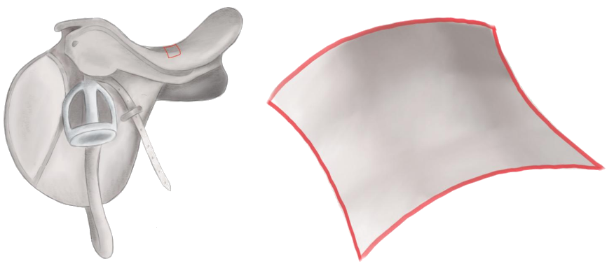

Geodäten
Wie die Oberfläche einer Kugel, lassen sich auch andere Flächen durch ein Sektormodell annähern. Im Folgenden betrachten wir das Sektormodell eines Ausschnitts einer Sattelfläche:
Frage:
Welche der folgenden Aussagen stimmen?
Diese Antwort ist nach richtiger Konstruktion leider falsch. Du solltest dir die Konstruktion deiner Geodäten noch einmal genauer anschauen. Vergiss nicht, dass die Geodäten an jedem Punkt ihre Richtung beibehalten. Ist eine deiner Geodäten vielleicht abgeknickt?
Hier noch ein mögliches Bild zum Vergleich:
Sehr gut!
Diese Antwort ist nach richtiger Konstruktion leider falsch.
Hier noch mögliche Bilder zum Vergleich:
Sehr gut!
Das ist leider nicht richtig. Die Geodäten auf den beiden Sektormodellen verhalten sich unterschiedlich. Folglich müssen sich die Geometrie der Sattelfläche und die der Kugeloberfläche ebenfalls unterscheiden.
Sehr gut!